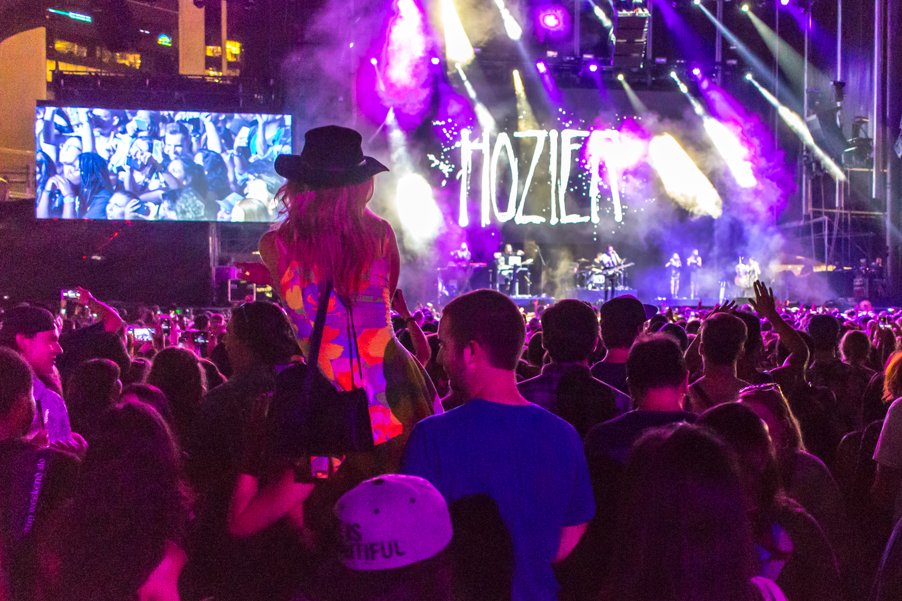

Unsere Künstler
Coldplay
Genre: Pop/Rock
Coldplay ist eine britische Rockband, die 1996 gegründet wurde. Sie sind bekannt für ihre melodischen und emotionalen Songs wie "Yellow", "Clocks" und "Viva la Vida".
Elton John
Genre: Pop/Rock
Elton John ist ein britischer Sänger, Pianist und Komponist, der seit den 1960er Jahren aktiv ist. Er ist bekannt für Hits wie "Rocket Man", "Tiny Dancer" und "Candle in the Wind".

50 Cent
Genre: Hip-Hop
50 Cent, bürgerlich Curtis Jackson, ist ein amerikanischer Rapper, der in den frühen 2000er Jahren mit Songs wie "In Da Club" und "Candy Shop" bekannt wurde.

Lil Yachty
Genre: Hip-Hop
Lil Yachty ist ein amerikanischer Rapper, der für seinen einzigartigen "Bubblegum Trap"-Sound bekannt ist. Seine bekanntesten Songs sind "One Night" und "Minnesota".

Hozier
Genre: Indie/Folk
Hozier ist ein irischer Musiker und Sänger-Songwriter, der für seinen Hit "Take Me to Church" bekannt ist. Seine Musik ist eine Mischung aus Soul, Blues und Indie-Rock.
Guns N' Roses
Genre: Rock
Guns N' Roses ist eine amerikanische Hard-Rock-Band, die in den späten 1980er und frühen 1990er Jahren mit Songs wie "Sweet Child o' Mine", "November Rain" und "Paradise City" berühmt wurde.